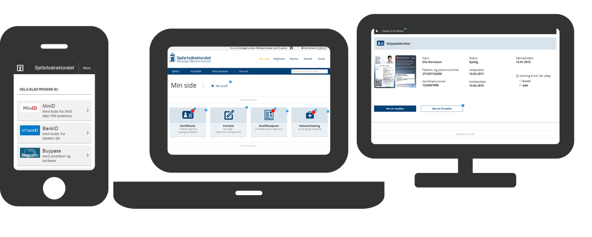

{{> header}}

<div class="article-wrapper">

    <h5 class="case">Case</h5>

    <h1>The Norwegian Maritime Authority</h1>

    <h2>The My Page project aims to offer a wide range of self service functions for the Norwegian Maritime Authority's customers</h2>

    <div class="article-image">
        <div class="article-image-element">
            
              <div class="article-image-overlay">
              <!--    <h2><span class="highlight">Wireframes for the new TV platform</span></h2>-->
              </div>
        </div>
    </div>


    <div class="article-text">

        <p>The My Page project aims to promote self service for the Norwegian Maritime Authority's customers.
          Aligned with a vision to digitize key processes and services, the project objective is to simplify
          the tasks of mariners, sailors, ship owners, shipyards, education providers, private boat owners and others.


        </br></br>My roles included user story mapping, responsive wireframe prototyping, test case writing, concept development, usability testing and content creation.
        The project is now being realised by my company Capgemini.
      </p>

    </div>

</div>


{{> footer}}
